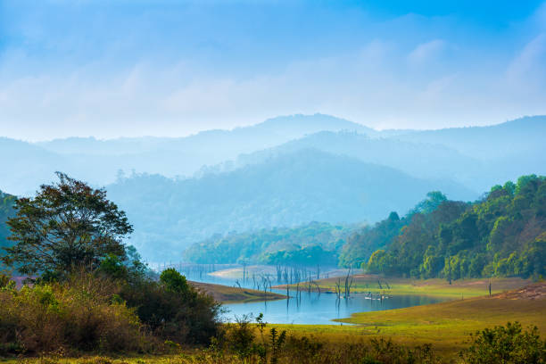
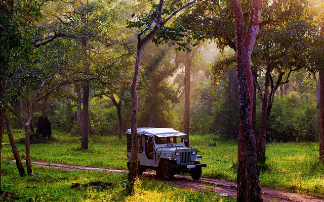
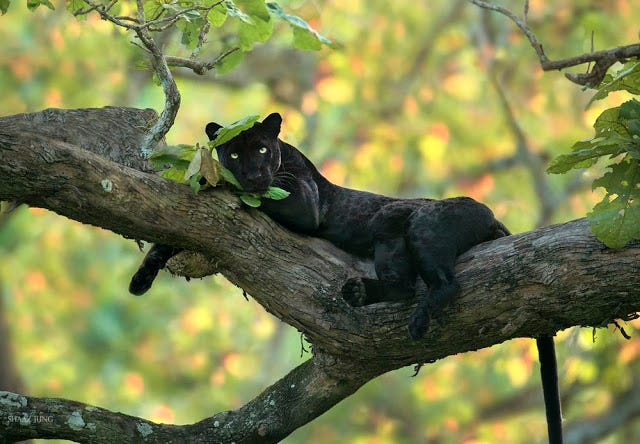
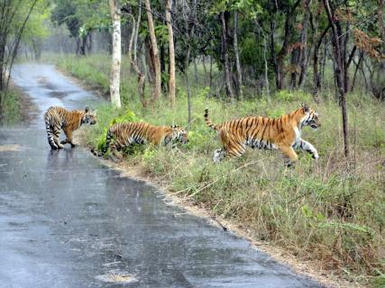

thumb_up
0
thumb_down
0

One of the most renowned national parks in South India, Periyar Wildlife Sanctuary and National Park is considered as the most protected area for the tigers and the elephants.
It is located in Thekkady in Kerala and is the perfect example of nature’s bounty with rich biodiversity and great scenic beauty.
Also being considered as the habitat of the elusive Nilgiri Tahr, Periyar Wildlife Sanctuary and National Park is a repository of rare, endemic and endangered flora and fauna.
Theykkady is a small town in the idukki district of kerala, covering 777sq km area of thick jungle. It is home to Indian bison, Sambar, Nilgiri Tahr, Elephant, and 46 Tigers.
The lake is the only means of transport inside the sanctuary. Therefore trekking is not on adventurous here but also healthy and refreshing.
 Once the hunting grounds of the Maharaja of Mysore, Bandipur National Park is one of the prominent national parks in South India as well as the best-managed parks of India, situated in the state of Karnataka. It is known for its varied wildlife boasting different biomes in the dry deciduous forests. Later it was established as a reserve under project tiger. Besides tiger, elephants, wild boar, hornbills, spotted deer, pythons, sloth bears, pythons, panthers, etc inhabit the park. The cultural capital of Karnataka, Mysore is full of heritage structures and palaces. Located at the foothills of Chamundi Hills, Mysore is at a distance of 146 kms southwest of the Karnataka state capital, Bangaluru. There exists a Tropical Savanna Climate in Mysore. Summer season is from March to June, Monsoon is from July to November and winter season is from December to February.
 Kabini forest reserve is one of the best wildlife destination in Karnataka mainly because of its accessibility, rich green vegetation, water body and possibility of the animal spotting like herds of Elephants, Jaguar, Tiger and Black Leopard. An eighty km drive from Mysore or 205 kms drive from Bengaluru makes the accessibility much more easier for people from Karanataka and people from Kerala can reach through Wayanad the origin land of Kabini River. The connection of south-eastern part of Nagarahole National Park gives more chances for animal spotting during summer. On the banks of Kabini Reservoir we could find 55 acres of forest land, steep valleys and other water bodies. In ancient period Kabini was the hunting spot for Mysore Maharaja, British viceroys and Indian Royalties. Kabini is surrounded by Nagarhole wildlife sanctuary and connected to several other lands like Tholpetty Wildlife Sanctuary, Kuruva Island, Sagar Dam and Wayanad.

Asylum for a wide variety of flora and fauna, Bannerghatta National Park is one of the renowned national parks in India, famously hailed for its tigers and lion safari.
It is situated in Bangalore in the state of Karnataka which is home to many attractions like the country’s first Butterfly Park, Ten Reserve Forests of Anekal Range of the Bangalore Forest Division, Crocodile Farm, Snake Park, an Aquarium, a Zoo, Children’s Park, and Prehistoric Animals’ Park.
Wildlife like Elephants, Asiatic Lion, Royal Bengal Tiger, Leopards, Jackal, sloth bear, India gazelle, etc is found here.
The 65,127.5 acre (260.51 km2[4]) national park is located about 22 km south of Bangalore in the hills of the Anekal range with an elevation of 1245 - 1634m.
The park has a hilly terrain of granite sheets under moist deciduous forest valleys and scrubland on higher areas.